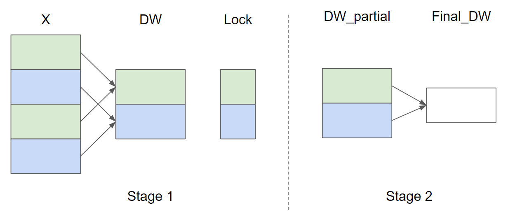
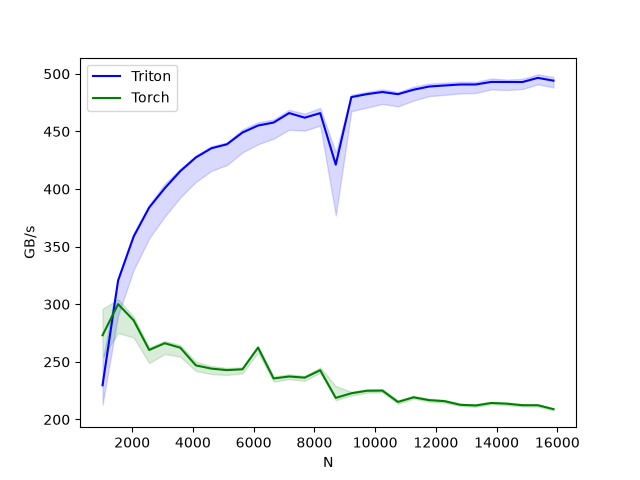
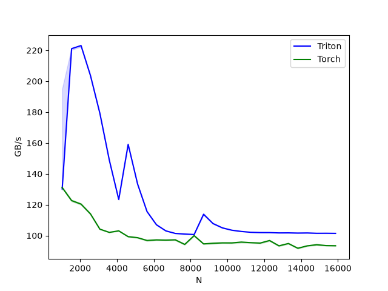
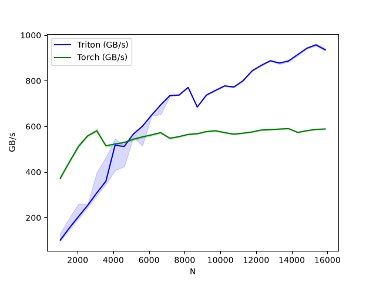
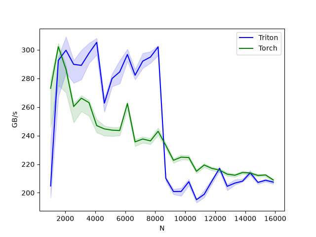
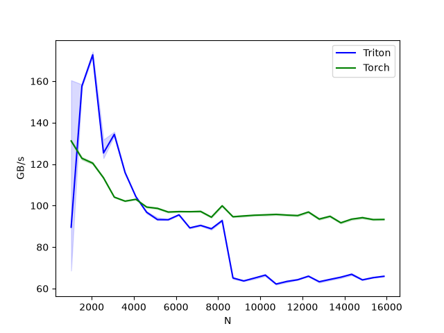

2.5 Layer Normalization
Layer Normalization¶
学习目标¶
- 学习在Triton中实现反向传播
- 掌握Triton中实现并行规约的方法
- 理解Triton的锁
1. Layer Normalization¶
Layer Normalization（层归一化，简称 LN）是深度学习中一种核心的归一化技术，由 Jimmy Lei Ba 等人在 2016 年提出。它主要用于稳定深度神经网络的训练，加速收敛，尤其在自然语言处理（NLP）和 Transformer 架构中被广泛采用。
1.1 核心思想与工作原理¶
与经典的批归一化（Batch Normalization, BN）不同，LN 改变了计算均值和方差的维度：
- BatchNorm（BN）：沿着 Batch（批次）维度 计算均值和方差。也就是说，它综合了一个 Batch 内所有样本在某个特征通道上的数据。
- LayerNorm（LN）：沿着 Feature（特征/隐藏层）维度 计算均值和方差。也就是说，它针对 每一个样本独立进行，计算该样本所有特征的均值和方差。
对于形状为 (Batch, Sequence_Length, Hidden_Dim) 的张量（常见于 Transformer），LN 会对每个样本的每一个 Token 的 Hidden_Dim 维度上的数值进行归一化。
1.2 计算步骤¶
对于输入的一个样本特征向量 x，LN 的计算过程如下：
- 计算均值 (\mu)：求出该样本特征维度上的平均值。
- 计算方差 (\sigma^2)：求出该样本特征维度上的方差。
- 归一化：将特征减去均值，并除以标准差（加上一个极小值 \epsilon 防止分母为零），使输出均值为 0、方差为 1。
- 仿射变换（Scale & Shift）：引入两个可学习的参数 \gamma（缩放系数）和 \beta（平移系数），让网络能够恢复出模型所需的特征表达能力。
1.3 为什么 Layer Normalization 如此重要？¶
- 摆脱对 Batch Size 的依赖 BN 的统计量依赖于当前的 Batch 大小，如果 Batch 设置得太小，均值和方差会很不准。而 LN 是按单样本独立计算的，因此无论 Batch Size 是 1 还是 1024，LN 的表现都完全一致。
- 完美适配变长序列（Sequence Data） 在 NLP 中，文本长度往往是动态变化的（需要 Padding）。BN 很难处理这种变长、多变的维度，而 LN 能够完美适应循环神经网络（RNN/LSTM）以及 Transformer 中的自注意力机制。
- 现代大模型的标配 无论是 GPT、BERT 还是 LLaMA 等大语言模型，其核心结构（如 Pre-LN 或 Post-LN Transformer 模块）都离不开 Layer Normalization（或者它的变体 RMSNorm）。
1.4 现代变体：RMSNorm (均方根层归一化)¶
Layer Normalization（LN）自 2016 年提出以来，在深度学习（尤其是 Transformer 架构）中经历了多次演进。为了应对大语言模型（LLM）对训练速度、显存占用和极致规模的追求，学术界和工业界对其进行了精简和优化。
其中，最成功、最核心的现代变体是 RMSNorm（Root Mean Square Normalization），此外还有针对超深网络设计的 DeepNorm 等。以下是这些主流变体的详细介绍：
1.4.1 RMSNorm¶
- 提出背景：由 Zhang 和 Sennrich 于 2019 年提出。
- 核心思想：传统 LayerNorm 需要计算均值（\mu）和方差（\sigma^2），而 RMSNorm 移除了中心化（减去均值）的操作，仅保留通过均方根（RMS）进行缩放。
- 计算公式：
(注：它没有平移参数 \beta，只有缩放参数 \gamma)
1.4.2 为什么 RMSNorm 成了大模型的标配？¶
- 极致的计算效率：归一化操作在 GPU 上通常受限于 显存带宽 而非算力。RMSNorm 省去了计算均值和减均值的步骤，减少了访存和计算开销。相比标准 LayerNorm，它能带来显著的速度提升（在不同模型上可提速 7% 到 60% 不等）。
- 大厂广泛采用：尽管去掉了“减均值”这一步，实验证明它在语言模型上的性能几乎没有损失。因此，它成为了目前主流开源大模型（如 LLaMA 系列、Mistral、Gemma、T5 等）的标准配置。
1.4.3 总结：归一化的演进哲学¶
从 Batch Normalization 到 Layer Normalization，再到如今大模型时代统治地位的 RMSNorm，其演进规律正印证了一句名言：“完美的标准不是再无可加，而是再无可减。”
现代变体通过剥离冗余的统计量（如均值），在不牺牲模型效果的前提下，压榨出了极致的计算和显存效率。
2. 前向算法计算过程¶
设输入张量为 x，其形状通常为 (M, N)（其中 M 是批次行数，N 是特征维度）。对于某一行（或者将整体视为向量），LayerNorm 的前向计算过程为：
- 均值（Mean）：
- 方差（Variance）：
- 归一化（Normalized input）：
- 仿射变换（Affine transformation）：
最后可以写成向量形式：y = w \odot \hat{x} + b，其中 \odot 表示逐元素相乘。
3. 测试代码¶
3.1 test_layer_norm函数¶
def test_layer_norm(M, N, dtype, eps=1e-5, device=DEVICE):
# create data
x_shape = (M, N)
w_shape = (x_shape[-1], )
weight = torch.rand(w_shape, dtype=dtype, device=device, requires_grad=True)
bias = torch.rand(w_shape, dtype=dtype, device=device, requires_grad=True)
x = -2.3 + 0.5 * torch.randn(x_shape, dtype=dtype, device=device)
dy = .1 * torch.randn_like(x)
x.requires_grad_(True)
# forward pass
y_tri = layer_norm(x, w_shape, weight, bias, eps)
y_ref = torch.nn.functional.layer_norm(x, w_shape, weight, bias, eps).to(dtype)
# backward pass (triton)
y_tri.backward(dy, retain_graph=True)
dx_tri, dw_tri, db_tri = [_.grad.clone() for _ in [x, weight, bias]]
x.grad, weight.grad, bias.grad = None, None, None
# backward pass (torch)
y_ref.backward(dy, retain_graph=True)
dx_ref, dw_ref, db_ref = [_.grad.clone() for _ in [x, weight, bias]]
# compare
assert torch.allclose(y_tri, y_ref, atol=1e-2, rtol=0)
assert torch.allclose(dx_tri, dx_ref, atol=1e-2, rtol=0)
assert torch.allclose(db_tri, db_ref, atol=1e-2, rtol=0)
assert torch.allclose(dw_tri, dw_ref, atol=1e-2, rtol=0)
3.2 requries_grad的作用¶
x = -2.3 + 0.5 * torch.randn(x_shape, dtype=dtype, device=device)
dy = .1 * torch.randn_like(x)
x.requires_grad_(True)
为什么不构造的时候设置requries_grad为True？也就是：
x = -2.3 + 0.5 * torch.randn(x_shape, dtype=dtype, device=device, requires_grad=True)
dy = .1 * torch.randn_like(x)
不在构造 torch.randn 时直接设置 requires_grad=True 的主要原因是：为了确保 x 是一个“叶子张量”（Leaf Tensor），从而使得 PyTorch 在反向传播后能够保留它的 .grad 属性。
我们可以通过对比两种写法来看看具体会发生什么：
3.2.1. 错误做法¶
假设我们将代码写成这样：
x = -2.3 + 0.5 * torch.randn(x_shape, dtype=dtype, device=device, requires_grad=True)
在这个过程中，PyTorch 的计算图是这样工作的：
torch.randn(..., requires_grad=True)创建了一个基础的随机张量，这个张量是 叶子节点，开始跟踪梯度。- 接着，它乘以
0.5，然后加上-2.3。这两个数学运算被记录在了计算图里。 - 最终得到的结果赋值给变量
x。此时的x是上述数学运算的 输出结果，它变成了一个 非叶子张量（Non-leaf Tensor / Intermediate Tensor）。
致命后果：
在 PyTorch 的默认机制中，为了节省内存，反向传播（.backward()）结束时，所有非叶子张量的梯度都会被自动释放。因此，当你执行完 y_tri.backward() 后去获取 x.grad 时，结果会是 None（并且 PyTorch 可能会抛出警告），这会导致后面的断言测试直接报错。
3.2.2. 正确写法¶
代码现在的写法分了两步：
# 第一步：只做纯数学运算，不跟踪梯度
x = -2.3 + 0.5 * torch.randn(x_shape, dtype=dtype, device=device)
# 第二步：将运算后的最终结果标记为需要求导
x.requires_grad_(True)
在这个过程中：
- 第一步纯粹是生成数据，没有开启梯度跟踪。生成的
x就是一个普普通通的张量。 - 调用
x.requires_grad_(True)是一个就地（in-place）操作，它直接将当前的x标记为计算图的起点。 - 此时，
x本身就成为了一个 叶子张量。
结果：
当调用 y_tri.backward() 时，梯度会一直传导到这个叶子张量 x 上，并安全地保存在 x.grad 中，供后续与官方的 dx_ref 进行正确性比对。
补充说明： 如果你非要在构造时开启梯度，但依然想拿到
x的梯度，你需要显式地调用.retain_grad()来强制保留非叶子节点的梯度，例如：
x = -2.3 + 0.5 * torch.randn(x_shape, requires_grad=True)
x.retain_grad() # 强制保留中间变量的梯度
但显然，先计算完数据再用
x.requires_grad_(True)是更简洁、更规范的做法。
3.2.3 非叶子Tensor怎么获得梯度？¶
对于一个非叶子张量（Non-leaf Tensor，即通过运算得出的中间变量），如果它是由带有梯度的叶子张量参与数学运算自动产生的，例如 y = x + 1），那么它的requires_grad=True。
3.2.3.1. 核心表现：梯度会被计算，但 默认无法通过 .grad 获取¶
在执行 .backward() 时：
- PyTorch 会 在底层计算出这个非叶子节点的梯度。
- 但是，在反向传播结束的瞬间，PyTorch 会立刻自动销毁（释放）所有非叶子节点的梯度和计算图中间状态，以节省显存。
- 因此，如果你事后去打印
y.grad，结果会是None（甚至有时 PyTorch 会给出警告）。
3.2.3.2. 如果非要获取非叶子节点的梯度怎么办？¶
如果你因为调试或其他原因，必须 拿到某个中间变量（非叶子张量）的梯度，你必须在调用 .backward() 之前，显式对该张量调用 .retain_grad()：
x = torch.tensor([2.0, 3.0], requires_grad=True)
y = x * 2 # y 是一个非叶子张量，其 requires_grad 自动为 True
y.retain_grad() # 关键：告诉 PyTorch 别删掉 y 的梯度
z = y.sum()
z.backward()
print(x.grad) # 可以正常获取叶子张量 x 的梯度 (tensor([2., 2.]))
print(y.grad) # 因为调用了 retain_grad()，这里也可以正常获取 y 的梯度 (tensor([1., 1.]))
3.2.3.3 总结¶
- 叶子张量（如直接创建的
x）：requires_grad=True时，梯度默认会一直保留在.grad中。 - 非叶子张量（如运算生成的
y）：即使requires_grad=True（或手动设置），其梯度在用完后也会被默认丢弃，必须配合.retain_grad()才能留存。
3.3 backward函数的retain_graph参数的作用¶
在 PyTorch 中，retain_graph=True 的核心作用是：在执行完当前的反向传播（.backward()）后，保留当前的计算图（Computation Graph），而不是将其销毁或释放。
3.3.1. 默认行为是什么？¶
默认情况下（即 retain_graph=False），为了节省显存，PyTorch 在调用一次 .backward() 后，会 立即释放 用来计算梯度的整张计算图。如果你尝试对同一个图再次调用 .backward()，PyTorch 就会报错，提示计算图已经被释放或销毁了。
3.3.2. 为什么在要设置为True？¶
在测试代码中：
y_tri.backward(dy, retain_graph=True)
dx_tri, dw_tri, db_tri = [_.grad.clone() for _ in [x, weight, bias]]
x.grad, weight.grad, bias.grad = None, None, None
y_ref.backward(dy, retain_graph=True)
dx_ref, dw_ref, db_ref = [_.grad.clone() for _ in [x, weight, bias]]
虽然 y_tri（Triton 自定义算子）和 y_ref（PyTorch 原生算子）是两张独立的计算图，但它们 复用了相同的输入张量（x、weight、bias）。
在某些复杂的测试场景中（或者作为编写测试脚本的一种保险习惯），加上 retain_graph=True 可以确保计算图在被求导后不会被意外销毁，从而避免因多次反向传播或复杂的图复用引发 RuntimeError。
retain_graph=False（默认）：用完即焚，省显存。适合绝大多数只需要反向传播一次的常规训练场景。retain_graph=True：用完保留，耗显存。适合需要对同一个前向结果 多次反向传播（例如求高阶导数、计算惩罚项、或者某些特殊的对比测试）的场景。
3.3.3 为什么删掉 y_tri 的图会影响到后面 y_ref.backward()？¶
好奇的同学可能会问：y_tri 和 y_ref 的计算图在计算逻辑上确实是完全独立的，它们只是恰好共用了 x、weight 和 bias 这几个叶子张量。为什么删掉 y_tri 的图会影响到后面 y_ref.backward() 呢？
答案在于：计算图的归属不是按“前向结果（y_tri 或 y_ref）”划分的，而是按“叶子张量（x、weight、bias）”合并生长的。
3.3.3.1. 叶子张量的“多图合并”特性（关键原因）¶
在 PyTorch 中，叶子张量（比如 x）是所有计算图的 根节点。
- 当你用
x第一次做前向运算得到y_tri时，x身上连接了一段计算图（记录了y_tri的生成过程）。 - 当你 接着 用同一个
x做第二次前向运算得到y_ref时，PyTorch 不会 为x创建一份全新的孤立计算图，而是直接 把新的运算路径接在了同一个x身上。
此时，在内存里，x 背后连接的其实是一张 交织在一起的庞大计算图：
┌─── y_tri (Triton 路径)
/
x ──────
\
└─── y_ref (PyTorch 参考路径)
它们共享同一个根节点 x。
3.3.3.2. .backward() 销毁图的实际动作¶
当调用 y_tri.backward(dy) 时（假设 retain_graph=False）：
- PyTorch 的自动求导引擎会从
y_tri开始，沿着计算图往回找，一直找到根节点x。 - 在回溯并计算完梯度后，为了释放内存，PyTorch 会 把这条路径上涉及的所有中间变量、梯度函数（
grad_fn）全部销毁。 - 致命点在于：因为
y_ref的前向路径也连接在同一个x（或者说和y_tri共享了某些底层结构/历史状态），当引擎清理y_tri的图时，顺手就把和x相关的整张大图（或者关键的依赖边）给清理掉了。 - 结果就是：轮到你调用
y_ref.backward(dy)时，PyTorch 会发现：“咦？这条路径的计算图已经被刚才的.backward()销毁了”，于是直接报错（提示图已经被释放）。
3.3.4 为什么这么设计？¶
y_tri.backward()结束后，会把整个图都删了，而不是只删除与y_tri相关的。为什么它不保留y_ref相关的图？
直接地答案：因为在 PyTorch 的底层机制中，计算图不是按“输出（比如 y_tri 或 y_ref）”被独立隔离的，而是被视为“同一张生长在一起的大图”。当默认触发清理机制时，整张图（或者说所有相关的拓扑路径）都会被作为整体回收。
3.3.4.1. 计算图是“有向无环图（DAG）”，而不是“独立的树”¶
在 PyTorch 里，计算图的生长方向是从 输入（叶子）指向输出 的：
x、weight、bias是根。- 第一次前向生成
y_tri时，图从根长出了第一根枝丫。 - 第二次前向生成
y_ref时，图又从 相同的根 长出了第二根枝丫。
- 第一次前向生成
在物理内存中，这两根枝丫在根节点（x 等）交汇成了一个整体。PyTorch 的反向传播引擎（Autograd Engine）在执行 .backward() 时：
- 从叶子节点向上追溯，或者从输出向下遍历。
- 当它发现任务完成（到达叶子节点）准备清理时，它的清理逻辑是“顺着被激活的拓扑路径进行内存回收（Free）”。
- 由于这两条路径在叶子节点处是物理连通的，引擎很难（或者说在当时的架构设计下没必要去）精准切分出“哪些边属于
y_tri，哪些边属于y_ref”。对它来说，既然这片区域的图已经被遍历并消费过了，为了安全和彻底释放显存，整片交织区域的结构就被一并清理了。
3.3.4.2. PyTorch 的设计哲学：用完即焚¶
PyTorch 的设计哲学极其偏向 显存优化（Memory Efficiency）。
- 在绝大多数标准的神经网络训练中，每个训练步（Step）通常只有 一个最终的损失函数（Loss），只会调用 一次
.backward()。 - 因此，PyTorch 默认认为：“
.backward()一旦执行完毕，这张图的使命就结束了，应当立刻粉碎它，把显存吐给下一轮训练。” - 它根本没有考虑过你会对同一个图跑 第二次
.backward()。如果你有多次反向传播的需求（比如高阶导数、或者像这里对比两个不同算子），PyTorch 的默认态度是：“这不是常规操作，如果你非要这么干，请显式告诉我要保留图——也就是加上retain_graph=True。”
3.3.4.3 总结¶
- 为什么删
y_tri的图会顺带把y_ref的路也弄坏？ 因为它们在内存中压根就不是两张图，而是共用根节点的 同一张图的两个分支。 - 为什么它不能自动识别并只留
y_ref？ 因为 Autograd 引擎的清理算法是基于拓扑路径的整体销毁，而不是精细化的“垃圾回收”。要打破这个限制，要么老老实实用retain_graph=True，要么就要下面的方法： 用不同的输入创建完全隔离的两张独立的图。
3.4 复制输入数据¶
如果把输入数据复制一份，让 Triton 和 PyTorch 分别使用各自独立的输入张量，它们就完全“各走各的路”了。这样确实就不再需要 retain_graph=True，也不用手动去清空 .grad。
3.4.1 修改后的代码¶
# 1. 准备初始数据
x_data = -2.3 + 0.5 * torch.randn(x_shape, dtype=dtype, device=device)
w_data = torch.rand(w_shape, dtype=dtype, device=device)
b_data = torch.rand(w_shape, dtype=dtype, device=device)
dy = .1 * torch.randn_like(x_data)
# 2. 为 Triton 复制一份独立的输入并开启梯度
x_tri = x_data.clone().detach().requires_grad_(True)
w_tri = w_data.clone().detach().requires_grad_(True)
b_tri = b_data.clone().detach().requires_grad_(True)
# 3. 为 PyTorch 参考标准再复制一份独立的输入并开启梯度
x_ref = x_data.clone().detach().requires_grad_(True)
w_ref = w_data.clone().detach().requires_grad_(True)
b_ref = b_data.clone().detach().requires_grad_(True)
# --- 之后就可以完全互不干扰地运行了 ---
# Triton 前向与反向
y_tri = layer_norm(x_tri, w_shape, w_tri, b_tri, eps)
y_tri.backward(dy)
dx_tri, dw_tri, db_tri = x_tri.grad, w_tri.grad, b_tri.grad
# PyTorch 前向与反向
y_ref = torch.nn.functional.layer_norm(x_ref, w_shape, w_ref, b_ref, eps).to(dtype)
y_ref.backward(dy)
dx_ref, dw_ref, db_ref = x_ref.grad, w_ref.grad, b_ref.grad
# 对比结果
assert torch.allclose(y_tri, y_ref, atol=1e-2, rtol=0)
assert torch.allclose(dx_tri, dx_ref, atol=1e-2, rtol=0)
# ... 后面照常断言
3.4.2 为什么原代码没有这样做，而是用 retain_graph=True 呢？¶
虽然“复制一份”的代码逻辑更直观、更不容易出错，但在实际工程和测试中，有时会考虑到以下几点权衡：
- 显存占用（Memory Footprint）： 如果测试的数据维度非常大（例如大语言模型中的大规模 Tensor），复制多份输入会占用额外的显存。而复用同一个输入张量，显存占用是最低的。
- 代码简洁度：
复用输入的写法代码行数会少一点（不用写很多
.clone().detach()）。
3.5 清空梯度¶
我们可以使用x.grad.clone()在获得梯度：
dx_tri, dw_tri, db_tri = [_.grad.clone() for _ in [x, weight, bias]]
为什么还要把它们设置为None？
x.grad, weight.grad, bias.grad = None, None, None
它的作用是：清空（重置）这几个张量当前积累的梯度（Gradient）。
3.5.1 为什么需要清空梯度？¶
- PyTorch 的默认行为是“累加梯度”
在 PyTorch 中，每次调用
.backward()计算出导数后，默认 不会覆盖 旧的梯度，而是会把新算出的梯度累加（+=）到原有的.grad属性上。这种设计是为了支持像“梯度累积（Gradient Accumulation）”这样的大批量训练场景。 -
如果不清空 在这段测试脚本中，代码逻辑是这样的：
- 第一步：执行
y_tri.backward(dy)，此时x.grad、weight.grad和bias.grad存储的是 Triton 自定义算子 算出来的梯度。 - 第二步：提取 Triton 的梯度：
dx_tri, dw_tri, db_tri = ... - 第三步（如果不清空）：执行
y_ref.backward(dy)。如果不清空，PyTorch 会把 PyTorch 官方参考算子算出的新梯度 直接加到 刚才 Triton 算出的旧梯度上面！ - 这样一来，后面的
dx_ref就会变成(Triton梯度 + PyTorch梯度)的混合值，从而导致最终的断言（assert torch.allclose）对比完全失效。
- 第一步：执行
3.5.2 Optimizer在训练的时候也会清空梯度¶
在 PyTorch 的优化器（Optimizer）中确实有一个对应的操作，叫做 optimizer.zero_grad()。而且，从 PyTorch 1.7 版本开始，它引入了一个非常重要的参数：set_to_none=True。
如果在定义优化器后这样写：
optimizer.zero_grad(set_to_none=True)
它的底层行为就和我们在测试代码中写 x.grad = None 完全一样——直接把梯度指针设为 None，而不是把梯度清零（0.0）。
3.5.3 为什么推荐使用 set_to_none=True？¶
- 性能更好（更快）：
如果用默认的
set_to_none=False，PyTorch 需要把张量里所有的梯度值逐个写成0（这会占用显存带宽）。而直接设为None省去了写内存的操作，能带来微小的性能提升。 - 节省显存：
将梯度设为
None可以释放对应的显存，在显存紧张的大模型训练中，这有助于防止显存溢出（OOM）。 - 行为改变：
如果梯度是
0，某些算子可能会把它当作一个实际的数值参与计算；而如果是None，PyTorch 会明确知道“这里没有梯度”，从而在某些内部逻辑上做优化。
所以在日常训练中，现代 PyTorch 代码（例如 Hugging Face Trainer 等）通常都会默认开启这个选项：
optimizer.zero_grad(set_to_none=True)
从 PyTorch 2.0 开始，optimizer.zero_grad() 中 set_to_none 的默认值就已经正式改为了 True。
在 PyTorch 2.0 之前，它的默认值是 False（即把梯度显式清零为全 0 的张量）。而现在，直接调用 optimizer.zero_grad() 就已经默认会把梯度直接设为 None 了，从而获得更好的性能和更低的显存占用。
4. Pytorch算子开发¶
在 PyTorch 中，当原生的 Python/PyTorch 操作无法满足性能需求，或者需要将自定义的底层硬件加速代码（如 CUDA C++ 或 Triton 算子）无缝集成到 PyTorch 生态中时，就需要进行 自定义算子开发（Custom Operator Development）。
PyTorch 的算子开发主要有两种主流方法：传统方法（torch.autograd.Function） 和 现代方法（torch.library.custom_op）。
4.1 传统方法：torch.autograd.Function¶
这是长期以来最经典、最常用的自定义算子开发方式。它通过编写一个继承自 torch.autograd.Function 的 Python 类，将前向逻辑（forward）和反向梯度计算逻辑（backward）封装在一起。
4.1.1. 核心步骤与写法骨架¶
forward静态方法：接收输入张量及其他参数，调用底层算子（如 Triton Kernel 或 C++ 扩展），并使用ctx.save_for_backward保存反向传播需要用到的中间变量。backward静态方法：接收上游传来的梯度（dy）以及ctx保存的变量，计算并返回对各个输入的导数（dx,dw等）。
import torch
class MyCustomAdd(torch.autograd.Function):
@staticmethod
def forward(ctx, x, y):
# 1. 保存反向需要用的张量（如果需要）
ctx.save_for_backward(x, y)
# 2. 执行前向计算（可以是 PyTorch 原生组合，也可以是 Triton/C++ 算子）
out = x + y
return out
@staticmethod
def backward(ctx, grad_output):
x, y = ctx.saved_tensors
# 3. 计算并返回梯度，参数顺序需与 forward 输入一一对应
grad_x = grad_output
grad_y = grad_output
return grad_x, grad_y
# 包装为便捷函数
my_custom_add = MyCustomAdd.apply
4.1.2. 特点与局限¶
- 优点：概念简单直观，上手极快，兼容绝大多数现有的 PyTorch 训练脚本。
- 缺点：对现代的
torch.compile极不友好。由于它缺乏对算子元信息的规范化声明，torch.compile往往无法“看透”其内部逻辑，极易导致 图中断（Graph Break），从而影响编译优化效果。
4.2 现代方法：torch.library.custom_op¶
为了拥抱 torch.compile 并实现更好的生态集成，PyTorch 推出了全新的现代化自定义算子注册机制——torch.library。这种方法将“算子行为定义”、“Fake/Meta 形状推导”和“反向规则注册”进行了解耦。
4.2.1. 核心步骤与写法骨架¶
使用新方法时，通常需要分三步来定义和注册一个算子：
- 定义前向算子：使用
@torch.library.custom_op装饰器。 - 注册 Fake 内核：使用
.register_fake，告诉编译器当输入是静态或动态形状（Fake Tensor）时，输出的形状和类型是什么（这使得torch.compile无需真正跑数据就能做形状推导）。 - 注册反向规则：使用
.register_autograd绑定求导逻辑。
import torch
# 1. 定义前向 Custom Op
@torch.library.custom_op("my_ops::my_add", mutates_args=())
def my_add(x: torch.Tensor, y: torch.Tensor) -> torch.Tensor:
return x + y
# 2. 注册 Fake/Meta 内核（供 torch.compile 静态分析形状）
@my_add.register_fake
def _my_add_fake(x, y):
return torch.empty_like(x)
# 3. 定义反向传播逻辑
def _my_add_backward(ctx, grad_output):
return grad_output, grad_output
def _my_add_setup_context(ctx, inputs, outputs):
# 如果反向需要前向的输入输出，在这里保存
pass
# 绑定反向规则
my_add.register_autograd(
_my_add_backward,
setup_context=_my_add_setup_context
)
4.2.2. 特点与优势¶
- 完美支持
torch.compile：由于有了显式的 Fake 形状注册，编译器能够将自定义算子无缝纳入计算图进行全图优化。 - 职责清晰：前向、形状推导、反向逻辑各司其职，代码规范性和可维护性更高，是目前 PyTorch 官方强力推荐的长期标准。
4.3 总结与选型建议¶
| 维度 | 传统方法 (torch.autograd.Function) |
现代方法 (torch.library.custom_op) |
|---|---|---|
| 推荐程度 | 逐渐过渡期（旧代码常见） | 官方主推、大势所趋 |
torch.compile 友好度 |
差（容易引起 Graph Break） | 极佳（原生支持） |
| 代码复杂度 | 较低，写在一个类里 | 稍高，需分步注册（前向、Fake、反向） |
| 适用场景 | 快速原型验证、不使用 torch.compile 的项目 |
追求极致性能、生产环境、大模型算子开发 |
4.4 LayerNorm算子¶
我们这里沿用Triton官方教程的方法，使用传统的方法。关于现代方法，请参考Extending PyTorch教程。
class LayerNorm(torch.autograd.Function):
@staticmethod
def forward(ctx, x, normalized_shape, weight, bias, eps):
# allocate output
y = torch.empty_like(x)
.........
ctx.save_for_backward(x, weight, bias, mean, rstd)
ctx.BLOCK_SIZE = BLOCK_SIZE
ctx.num_warps = num_warps
ctx.eps = eps
..........
return y
@staticmethod
def backward(ctx, dy):
x, w, b, m, v = ctx.saved_tensors
....
return dx, None, dw, db, None
layer_norm = LayerNorm.apply
4. 前向算法代码¶
4.1 forward函数¶
@staticmethod
def forward(ctx, x, normalized_shape, weight, bias, eps):
# allocate output
y = torch.empty_like(x)
# reshape input data into 2D tensor
x_arg = x.reshape(-1, x.shape[-1])
M, N = x_arg.shape
mean = torch.empty((M, ), dtype=torch.float32, device=x.device)
rstd = torch.empty((M, ), dtype=torch.float32, device=x.device)
# Less than 64KB per feature: enqueue fused kernel
MAX_FUSED_SIZE = 65536 // x.element_size()
BLOCK_SIZE = min(MAX_FUSED_SIZE, triton.next_power_of_2(N))
if N > BLOCK_SIZE:
raise RuntimeError("This layer norm doesn't support feature dim >= 64KB.")
# heuristics for number of warps
num_warps = min(max(BLOCK_SIZE // 256, 1), 8)
# enqueue kernel
_layer_norm_fwd_fused[(M, )]( #
x_arg, y, weight, bias, mean, rstd, #
x_arg.stride(0), N, eps, #
BLOCK_SIZE=BLOCK_SIZE, num_warps=num_warps, num_ctas=1)
ctx.save_for_backward(x, weight, bias, mean, rstd)
ctx.BLOCK_SIZE = BLOCK_SIZE
ctx.num_warps = num_warps
ctx.eps = eps
return y
4.2 代码解释¶
这段代码展示了 Layer Normalization 前向传播中，如何通过 Python/PyTorch 包装函数来准备参数并调用 Triton 内核（Kernel）。它是连接 PyTorch 上层调用与底层 GPU 硬件加速的关键桥梁。
4.2.1 张量重塑与内存分配¶
y = torch.empty_like(x)
x_arg = x.reshape(-1, x.shape[-1])
M, N = x_arg.shape
mean = torch.empty((M, ), dtype=torch.float32, device=x.device)
rstd = torch.empty((M, ), dtype=torch.float32, device=x.device)
- 分配输出：
y用于存储最终归一化后的输出，形状和输入x完全一致。 - 展平为 2D 矩阵：
x.reshape(-1, x.shape[-1])将任意高维张量（如 Transformer 中的(Batch, Seq_Len, Hidden_Dim)）统一转化为 2D 矩阵 (M行, N列)。其中 M 代表总行数（样本数 \times 序列长度），N 代表特征维度（Hidden_Dim）。 - 分配统计量缓冲区：
mean（均值）和rstd（标准差倒数）的形状都是(M,)，即 每一行对应一个统计量。它们不仅是前向计算的中间结果，也会被保存下来用于后面的反向传播。
4.2.2 硬件限制检查与块大小（Block Size）计算¶
MAX_FUSED_SIZE = 65536 // x.element_size()
BLOCK_SIZE = min(MAX_FUSED_SIZE, triton.next_power_of_2(N))
if N > BLOCK_SIZE:
raise RuntimeError("This layer norm doesn't support feature dim >= 64KB.")
- 共享内存/寄存器限制：
MAX_FUSED_SIZE计算了单行特征能够容纳的最大字节数（通常对应 GPU 的某些硬件缓存限制，这里以 64KB 为阈值）。 - 对齐 2的幂次：
triton.next_power_of_2(N)将特征维度 N 向上取整到最近的 2 的幂次（例如 N=1000 会被对齐到 1024），这是 GPU 硬件高效访存的要求。 - 安全检查：如果特征维度 N 太大超过了 64KB，当前设计的 Kernel 无法单次处理，会直接报错提示。
4.2.3 启发式参数调优（Heuristics）¶
num_warps = min(max(BLOCK_SIZE // 256, 1), 8)
- 动态计算线程束数量 (
num_warps)：根据BLOCK_SIZE的大小自动决定分配多少个 Warp（每个 Warp 包含 32 个线程）来并行处理每一行。这样可以在不同的特征长度下平衡并行度和资源占用。
4.2.4 启动 Triton 内核并保存上下文¶
_layer_norm_fwd_fused[(M, )]( #
x_arg, y, weight, bias, mean, rstd, #
x_arg.stride(0), N, eps, #
BLOCK_SIZE=BLOCK_SIZE, num_warps=num_warps, num_ctas=1)
ctx.save_for_backward(x, weight, bias, mean, rstd)
ctx.BLOCK_SIZE = BLOCK_SIZE
ctx.num_warps = num_warps
ctx.eps = eps
return y
- 一维网格启动
[(M,)]：网格大小设为M，意味着总共启动M个程序实例（Program），每一个程序实例独立负责处理矩阵中的一行。 - 传入参数：将输入指针、输出指针、权重、偏置、均值、标准差倒数、步长（Stride）、特征维度 N 以及
eps传入底层 Triton Kernel。 - 保存上下文 (
ctx)：把输入x、权重、偏置以及算出来的mean、rstd存入ctx中，供反向传播（Backward）时计算梯度使用。
4.3 核函数¶
@triton.jit
def _layer_norm_fwd_fused(
X, # pointer to the input
Y, # pointer to the output
W, # pointer to the weights
B, # pointer to the biases
Mean, # pointer to the mean
Rstd, # pointer to the 1/std
stride, # how much to increase the pointer when moving by 1 row
N, # number of columns in X
eps, # epsilon to avoid division by zero
BLOCK_SIZE: tl.constexpr,
):
# Map the program id to the row of X and Y it should compute.
row = tl.program_id(0)
Y += row * stride
X += row * stride
# Compute mean
mean = 0
_mean = tl.zeros([BLOCK_SIZE], dtype=tl.float32)
for off in range(0, N, BLOCK_SIZE):
cols = off + tl.arange(0, BLOCK_SIZE)
a = tl.load(X + cols, mask=cols < N, other=0.).to(tl.float32)
_mean += a
mean = tl.sum(_mean, axis=0) / N
# Compute variance
_var = tl.zeros([BLOCK_SIZE], dtype=tl.float32)
for off in range(0, N, BLOCK_SIZE):
cols = off + tl.arange(0, BLOCK_SIZE)
x = tl.load(X + cols, mask=cols < N, other=0.).to(tl.float32)
x = tl.where(cols < N, x - mean, 0.)
_var += x * x
var = tl.sum(_var, axis=0) / N
rstd = 1 / tl.sqrt(var + eps)
# Write mean / rstd
tl.store(Mean + row, mean)
tl.store(Rstd + row, rstd)
# Normalize and apply linear transformation
for off in range(0, N, BLOCK_SIZE):
cols = off + tl.arange(0, BLOCK_SIZE)
mask = cols < N
w = tl.load(W + cols, mask=mask)
b = tl.load(B + cols, mask=mask)
x = tl.load(X + cols, mask=mask, other=0.).to(tl.float32)
x_hat = (x - mean) * rstd
y = x_hat * w + b
# Write output
tl.store(Y + cols, y, mask=mask)
4.4 代码解读¶
这段代码实现了 Layer Normalization（层归一化）的前向传播融合内核（Forward Pass Fused Kernel）。
它通过 Triton 编写，将 LayerNorm 的核心步骤（计算均值、计算方差、归一化、以及缩放和平移即仿射变换）融合在单个 Kernel 中，避免了多次访存带来的性能开销。
4.4.1 确定当前线程块负责的“行”¶
row = tl.program_id(0)
Y += row * stride
X += row * stride
- 按行并行（Row-wise Parallelism）：网格的第一个维度（
program_id(0)）对应输入矩阵的 行索引。也就是说，每一个 Triton 程序实例（Program）独立负责计算输入矩阵 X 中的 某一行。 Y += row * stride和X += row * stride将全局指针移动到当前行对应的起始位置。
4.4.2 计算均值 (\mu)¶
mean = 0
_mean = tl.zeros([BLOCK_SIZE], dtype=tl.float32)
for off in range(0, N, BLOCK_SIZE):
cols = off + tl.arange(0, BLOCK_SIZE)
a = tl.load(X + cols, mask=cols < N, other=0.).to(tl.float32)
_mean += a
mean = tl.sum(_mean, axis=0) / N
- 分块循环加载：如果列数
N（即特征维度 Hidden Dim）很大，超过了单次BLOCK_SIZE的限制，代码会通过for循环按块加载当前行的数据。 mask=cols < N：防止当N不是BLOCK_SIZE整数倍时发生越界读取，超出部分补零（other=0.）。- 规约求和：把所有分块累加到
_mean中，最后通过tl.sum(_mean, axis=0) / N算出这一行所有特征的平均值（Mean）。
说明：在forward里，其实已经做了限制，要求BLOCK_SIZE <= N，其实可以把for循环去掉。
4.4.3 计算方差 (\sigma^2) 与标准差倒数 (rstd)¶
_var = tl.zeros([BLOCK_SIZE], dtype=tl.float32)
for off in range(0, N, BLOCK_SIZE):
cols = off + tl.arange(0, BLOCK_SIZE)
x = tl.load(X + cols, mask=cols < N, other=0.).to(tl.float32)
x = tl.where(cols < N, x - mean, 0.)
_var += x * x
var = tl.sum(_var, axis=0) / N
rstd = 1 / tl.sqrt(var + eps)
- 计算离差平方和：再次遍历当前行的元素，减去刚刚算好的均值
mean，计算平方（(x - \mu)^2）并累加到_var中。 - 计算
rstd：求出方差var后，加上一个微小值eps（防止分母为零），然后计算其平方根的倒数：\text{rstd} = \frac{1}{\sqrt{\sigma^2 + \epsilon}}。
4.4.4 保存统计量¶
tl.store(Mean + row, mean)
tl.store(Rstd + row, rstd)
- 将当前行计算出来的均值
mean和标准差倒数rstd存入全局内存中。这两个统计量在后续的反向传播（Backward Pass）中会用到。
说明：一般会把前向计算中很费时间的中间计算结果，尤其是需要规约的计算(比如这里的tl.sum)。如果反向要用到，我们一般把它保存下来给反向用，而一些简单的中间结果，我们宁可再次计算，也比去HBM读取更快。
4.4.5 归一化与仿射变换（Scale & Shift）并写回¶
for off in range(0, N, BLOCK_SIZE):
cols = off + tl.arange(0, BLOCK_SIZE)
mask = cols < N
w = tl.load(W + cols, mask=mask)
b = tl.load(B + cols, mask=mask)
x = tl.load(X + cols, mask=mask, other=0.).to(tl.float32)
x_hat = (x - mean) * rstd
y = x_hat * w + b
# Write output
tl.store(Y + cols, y, mask=mask)
- 第三次遍历（或融合计算）：
- 加载权重
W（\gamma）和偏置B（\beta）。 - 对输入 x 进行归一化：x_{\hat{} } = (x - \mu) \times \text{rstd}。
- 应用仿射变换：y = x_{\hat{} } \times w + b。
- 加载权重
tl.store：将最终计算好的结果 y 写回到输出矩阵Y的对应行中。
4.4.6 总结¶
这个算子展示了 Triton 的强大之处：它将 PyTorch 中通常需要拆分成多个算子（Mean、Sub、Pow、Mean、Add、Sqrt、Div、Mul、Add）的 LayerNorm 前向过程 融合成了一个单一的 Kernel，极大地减少了对显存的读写次数（省去了中间张量的 Global Memory 吞吐），从而大幅提升了计算性能。
5. 反向算法公式及其推导¶
5.1 公式¶
层归一化（Layer Normalization）算子的反向传播比前向传播稍微复杂一些。
设 \hat{x} 为线性变换之前的归一化输入 \frac{ x - \text{E}[x] }{ \sqrt{\text{Var}(x) + \epsilon} }， 则关于 x 的向量-雅可比积（VJP） \nabla_{x} 的计算公式为：
其中 \odot 表示逐元素相乘，\cdot 表示点积，\sigma 是标准差。 c_1 和 c_2 是中间常数，用于提高后续实现的 可读性。
对于权重 w 和偏置 b，其 VJP \nabla_{w} 和 \nabla_{b} 则更为直接：
5.2 \frac{\partial L}{\partial x}的推导过程¶
推导 Layer Normalization（层归一化）的梯度是一个非常经典的机器学习微积分问题。我们需要利用 多元函数的链式法则 和 向量-雅可比积（VJP）。
下面我们一步步推导输入 x 的梯度 \nabla_x（即 \frac{\partial L}{\partial x}）。
5.2.1. 前向传播回顾¶
设输入张量为 x，其形状通常为 (M, N)（其中 M 是批次行数，N 是特征维度）。对于某一行（或者将整体视为向量），LayerNorm 的前向计算过程为：
- 均值（Mean）：
- 方差（Variance）：
- 归一化（Normalized input）：
- 仿射变换（Affine transformation）：
写成在向量形式：
假设在上游，我们已经得到了输出 y 的梯度 \nabla_y = \frac{\partial L}{\partial y}（在下面的代码中对应 dy）。我们的目标是求 \nabla_x = \frac{\partial L}{\partial x}。
5.2.2. 利用链式法则展开¶
根据链式法则，损失 L 关于输入 x_i 的导数可以写为：
因为 y_j = w_j \hat{x}_j + b_j，所以：
代入上式得到：
这里为了简化书写，令 z = \nabla_y \odot w（即代码文档中的 \nabla_y \odot w）。因此我们需要求出 \hat{x}_j 对 x_i 的偏导数 \frac{\partial \hat{x}_j}{\partial x_i}。
5.2.3. 求 \frac{\partial \hat{x}_j}{\partial x_i}¶
为了将省略的中间代数展开步骤清晰地补充完整，我们需要对 \hat{x}_j 展开成显式的均值 \mu 和方差（标准差 \sigma_{eps}）的形式，然后分别对 x_i 求偏导。
回顾定义：
我们对 \hat{x}_j = \frac{x_j - \mu}{\sigma_{eps}} 应用 除法法则：
将其代入 \hat{x}_j = \frac{x_j - \mu}{\sigma_{eps}} 的关系，等式右边可以改写为：
接下来，我们依次推导括号内的两部分：
5.2.3.1 计算 \frac{\partial (x_j - \mu)}{\partial x_i}¶
因为 \mu = \frac{1}{N}\sum_{k=1}^N x_k，所以它对某一特定分量 x_i 的偏导数是：
结合克罗内克函数 \delta_{ij}（当 i=j 时为 1，否则为 0）：
5.2.3.2 计算标准差变化的偏导数 \frac{\partial \sigma_{eps}}{\partial x_i}¶
首先利用链式法则对 \sigma_{eps} = \sqrt{\sigma^2 + \epsilon} 求导：
接着计算方差 \sigma^2 = \frac{1}{N}\sum_{k=1}^N (x_k - \mu)^2 对 x_i 的偏导：
代入 \frac{\partial (x_k - \mu)}{\partial x_i} = \delta_{ki} - \frac{1}{N}：
展开求和符号：
因为均值的偏差之和为零（\sum_{k=1}^N (x_k - \mu) = 0），上式简化为：
将其代回 \frac{\partial \sigma_{eps}}{\partial x_i} 中：
注意到 \frac{x_i - \mu}{\sigma_{eps}} 正好就是 \hat{x}_i，因此：
5.2.3.3 合并各项¶
将第一步和第二步的中间结果代回总式：
整理得到：
5.2.3.4. 组合并转化为向量形式（VJP）¶
回顾前面得到的偏导数完整形式：
将其代回链式法则的表达式中：
将 \frac{1}{\sigma_{eps}} 提取到求和符号外面，并将求和项拆解为三部分：
分别对这三项进行求和化简：
- 第一项（克罗内克函数的作用）：
- 第二项（对 z 的全局平均）：
- 第三项（结合 \hat{x}_i 提取公因式）：
将这三项合并，得到针对单个分量 x_i 的偏导数：
5.2.3.5 转化为向量与矩阵形式（\nabla_x）¶
为了将上述标量形式写成高效的向量化操作（Vector-Jacobian Product, VJP），我们可以将所有分量写为向量形式。
定义中间变量（常数）：
- c_1（表示 z 与 \hat{x} 的点积平均）：
- c_2（表示 z 各分量的平均值）：
将 z = \nabla_y \odot w 代回，最终得到向量形式的梯度 \nabla_x = \frac{\partial L}{\partial x}：
5.2.3.6 c_1和c_2是标量(数)¶
注意：对于某一个样本（某一行）而言，c_1 是一个标量（Scalar）。
既然 c_1 是标量，为什么它能和向量 \hat{x} 进行 \odot（逐元素相乘）呢？我们可以从以下两个层面来理解：
5.2.3.6.1. 广播机制（Broadcasting）与符号简写¶
在深度学习和张量计算中（如 PyTorch 或 NumPy），符号 \odot 有时会被泛化使用：
- 当一个 标量 和一个 向量 进行运算时，现代计算框架会自动触发 广播机制（Broadcasting）。
- 标量 c_1 会被隐式扩展（Broadcast）成一个大小与 \hat{x} 相同的向量（即向量里的每一个元素都等于 c_1），然后再与 \hat{x} 进行逐元素相乘。
- 因此，c_1 \odot \hat{x} 的数学本质就是 标量与向量的乘法（Scalar-Vector Multiplication），即让向量 \hat{x} 中的每一个分量都乘以同一个常数 c_1。
5.2.3.6.2. c_2¶
同样地，另一个中间常数 c_2：
它也是一个 标量（因为是两个向量做点积再除以 N）。 在最终的公式 \nabla_{x} = \frac{1}{\sigma}\Big( \nabla_{y} \odot w - c_1 \odot \hat{x} - c_2 \Big) 中：
- 最后的减去 c_2，也是利用了广播机制：把标量 c_2 从前面计算出来的向量中每一个元素都减去它。
5.2.3.6.3 总结¶
- c_1 和 c_2 的身份：对单行数据来说，它们都是 标量。
- \odot 的实际执行：在写代码或推导时，标量与向量的运算通过“广播”隐式完成了逐元素相乘/相减，所以每一行的数据维度依然能完美对齐，最终输出一个与 x 形状完全相同的梯度矩阵 \nabla_x。
5.3 w 和b 的梯度推导¶
相比于输入 x 的梯度，权重 w 和偏置 b 的梯度推导要直观得多。
不过这里有一个核心特点需要注意：w 和 b 是整批数据（所有行）共享的参数，因此它们在不同行（Batch 维度）上产生的梯度需要累加（Summation）起来。
下面我们分别推导它们的梯度。
5.3.1. 前向传播回顾¶
对于输入矩阵的某一行 m（特征维度为 N），LayerNorm 的仿射变换公式为：
其中：
- m \in [1, M] 表示批次中的行索引（Batch/Row）。
- n \in [1, N] 表示特征维度索引。
- w_n 和 b_n 是长度为 N 的向量中的第 n 个元素，它们在所有行 m 中是 固定共享 的。
假设我们已经得到了上游传下来的梯度矩阵：\nabla_y = \frac{\partial L}{\partial y}，其形状也是 (M, N)。
5.3.2. 权重 w 的梯度推导（\nabla_w）¶
我们要计算损失 L 关于某个权重分量 w_n 的偏导数 \frac{\partial L}{\partial w_n}。
根据多元函数的链式法则，由于 w_n 参与了 每一行 的前向计算，所以最终的总梯度是所有行贡献的加和：
观察前向公式 y_{m, n} = w_n \cdot \hat{x}_{m, n} + b_n，对其求 w_n 的偏导：
代入求和公式中：
若将其写成 向量/逐元素相乘 的形式（针对特征维度的整个向量）：
即：把每一行的 \nabla_y 与该行的 \hat{x} 逐元素相乘，然后把所有行相加，得到一个形状为 (N,) 的向量*。
5.3.3. 偏置 b 的梯度推导（\nabla_b）¶
同样地，我们要计算损失 L 关于某个偏置分量 b_n 的偏导数 \frac{\partial L}{\partial b_n}：
观察前向公式，对其求 b_n 的偏导：
代入求和公式中：
若将其写成向量形式：
即：直接把所有行的 \nabla_y 在行方向（Batch维度）上相加，得到一个形状为 (N,) 的向量)。
5.3.4 w/b与x的梯度计算的差异¶
从上面的公式可以发现：x的梯度可以 逐行 计算，不用规约，而w和b需要 规约。
5.3.4.1. 为什么 x 的梯度不需要跨行规约？¶
- 独立计算（Row-wise Independent）：在 Layer Normalization 中，归一化操作是 按行（或者说按每个样本）独立进行的。第 m 行的均值 \mu_m 和方差 \sigma_m 只和这一行本身的 N 个元素有关，与其他行毫无关系。
- 因此，当我们求输入 x 的梯度时，第 m 行的梯度 \nabla_{x_m} 也完全只由该行的 \hat{x}_m、\nabla_{y_m} 以及本行的统计量决定。
- 结论：不同的行之间在计算 \nabla_x 时是 完全隔离、互不干扰的。每一个 Triton 的线程块（Block）只要拿到自己负责的那几行数据，就能直接独立算完对应的 \nabla_x，根本不需要跟别的行做任何数据汇总（规约）。
5.3.4.2. 为什么 w 和 b 必须跨行规约？¶
- 全局共享（Global Parameters）：权重 w 和偏置 b 的形状是 (N,)，它们不是按行变动的，而是 整个 Batch（M 行）共用同一套参数。
- 前面推导过，总梯度是所有行贡献的累加：
- 这意味着：第 1 行对 w 产生了局部的贡献，第 2 行也产生了，第 3 行也产生了……最终的 w 的梯度必须是 这 M 行的所有局部贡献相加。
- 结论：因为 M 行的数据都要往同一份 w 和 b 的梯度上累加，这就产生了“多对一”的写冲突和汇总需求。所以，必须通过我们前面讨论的 并行规约（Parallel Reduction），把不同行算出来的局部梯度安全、高效地加总到一起。
5.4 两阶段并行规约策略¶
从数学上看，\nabla_w 和 \nabla_b 只是简单的 逐元素相乘 外加 沿行方向（Batch 维度）求和。
但由于行数 M 可能非常大（例如几千甚至上万），如果让所有线程盲目地去往同一个全局内存地址累加 \nabla_w，比如用我们在CUDA编程里学过的atomicAdd，那么会导致严重的 显存竞争（Race Condition）。
为了减少竞争，这里使用了 两阶段并行规约策略：
- Stage 1 (
_layer_norm_bwd_dwdb)：把 M 行分成若干组（由GROUP_SIZE_M控制），每个 Kernel 实例先在局部把一部分行的梯度累加到 L2 缓存的独立缓冲区中。 - Stage 2：再把这些临时缓冲区规约合并，最终算出完整的 \nabla_w 和 \nabla_b。
假设输入行数 M = 4 且 \text{GROUP_SIZE_M} = 2， 下图展示了 \nabla_{w} 的并行规约策略（为简起见，省略了 \nabla_{b}）：

在第一阶段（Stage 1），具有相同颜色的 X 的行共享同一个缓冲区，因此使用锁（lock）来确保每次只有一个内核实例写入缓冲区。
在第二阶段（Stage 2），对缓冲区进一步规约以计算最终的 \nabla_{w} 和 \nabla_{b}。
在下面的实现中，第一阶段由函数 _layer_norm_bwd_dx_fused 实现，第二阶段由函数 _layer_norm_bwd_dwdb 实现。
6. 反向算法代码¶
6.1 backward函数¶
@staticmethod
def backward(ctx, dy):
x, w, b, m, v = ctx.saved_tensors
# heuristics for amount of parallel reduction stream for DW/DB
N = w.shape[0]
GROUP_SIZE_M = 64
if N <= 8192: GROUP_SIZE_M = 96
if N <= 4096: GROUP_SIZE_M = 128
if N <= 1024: GROUP_SIZE_M = 256
# allocate output
locks = torch.zeros(2 * GROUP_SIZE_M, dtype=torch.int32, device=w.device)
_dw = torch.zeros((GROUP_SIZE_M, N), dtype=x.dtype, device=w.device)
_db = torch.zeros((GROUP_SIZE_M, N), dtype=x.dtype, device=w.device)
dw = torch.empty((N, ), dtype=w.dtype, device=w.device)
db = torch.empty((N, ), dtype=w.dtype, device=w.device)
dx = torch.empty_like(dy)
# enqueue kernel using forward pass heuristics
# also compute partial sums for DW and DB
x_arg = x.reshape(-1, x.shape[-1])
M, N = x_arg.shape
_layer_norm_bwd_dx_fused[(M, )]( #
dx, dy, _dw, _db, x, w, m, v, locks, #
x_arg.stride(0), N, #
BLOCK_SIZE_N=ctx.BLOCK_SIZE, #
GROUP_SIZE_M=GROUP_SIZE_M, #
num_warps=ctx.num_warps)
grid = lambda meta: (triton.cdiv(N, meta['BLOCK_SIZE_N']), )
# accumulate partial sums in separate kernel
_layer_norm_bwd_dwdb[grid](
_dw, _db, dw, db, min(GROUP_SIZE_M, M), N, #
BLOCK_SIZE_M=32, #
BLOCK_SIZE_N=128, num_ctas=1)
return dx, None, dw, db, None
6.2 代码解读¶
这段代码实现了 Layer Normalization 反向传播（Backward Pass）的 Python/PyTorch 包装函数。
在反向传播中，除了计算输入梯度 dx 之外，还需要计算权重梯度 dw 和偏置梯度 db。由于 dw 和 db 需要对整个批次（M 行）的所有行进行累加（Reduction），它的并行化和归约处理比前向传播要复杂得多。
6.2.1 确定并行化粒度与分配临时缓冲区¶
N = w.shape[0]
GROUP_SIZE_M = 64
if N <= 8192: GROUP_SIZE_M = 96
if N <= 4096: GROUP_SIZE_M = 128
if N <= 1024: GROUP_SIZE_M = 256
# allocate output
locks = torch.zeros(2 * GROUP_SIZE_M, dtype=torch.int32, device=w.device)
_dw = torch.zeros((GROUP_SIZE_M, N), dtype=x.dtype, device=w.device)
_db = torch.zeros((GROUP_SIZE_M, N), dtype=x.dtype, device=w.device)
dw = torch.empty((N, ), dtype=w.dtype, device=w.device)
db = torch.empty((N, ), dtype=w.dtype, device=w.device)
dx = torch.empty_like(dy)
- 启发式调整
GROUP_SIZE_M：根据特征维度 N 的大小动态调整分组行数。当特征维度较小时，增加并行组数以充分利用 GPU 的算力。 - 分阶段归约的中间缓冲区：
_dw和_db是大小为(GROUP_SIZE_M, N)的 局部部分和（Partial Sums）缓冲区。因为多个线程块会同时计算梯度，我们需要把它们先按组累加到这里，防止多线程写冲突（Atomic Race Condition）。locks用于实现轻量级的线程块同步锁（Spinlock）。
- 最终输出：
dx（输入梯度）、dw（权重梯度）、db（偏置梯度）。
6.2.2 第一阶段：计算输入梯度 dx 与部分和 _dw/_db¶
x_arg = x.reshape(-1, x.shape[-1])
M, N = x_arg.shape
_layer_norm_bwd_dx_fused[(M, )]( #
dx, dy, _dw, _db, x, w, m, v, locks, #
x_arg.stride(0), N, #
BLOCK_SIZE_N=ctx.BLOCK_SIZE, #
GROUP_SIZE_M=GROUP_SIZE_M, #
num_warps=ctx.num_warps)
- 并行网格
(M,)：依然启动 M 个程序实例（每一行对应一个实例），利用前面推导的 VJP 公式并行计算每一行的输入梯度dx。 - 顺便计算部分和：在计算
dx的同时，每个线程块会把当前行对dw和db的贡献累加到对应的_dw和_db分组缓冲区中（通过原子操作或锁机制协同），从而避免了单独再跑一遍完整的归约。
6.2.3 第二阶段：归约部分和得到最终的 dw 和 db¶
grid = lambda meta: (triton.cdiv(N, meta['BLOCK_SIZE_N']), )
# accumulate partial sums in separate kernel
_layer_norm_bwd_dwdb[grid](
_dw, _db, dw, db, min(GROUP_SIZE_M, M), N, #
BLOCK_SIZE_M=32, #
BLOCK_SIZE_N=128, num_ctas=1)
return dx, None, dw, db, None
- 列向归约 Kernel (
_layer_norm_bwd_dwdb)：- 第一阶段产出的
_dw和_db形状是(GROUP_SIZE_M, N)。 - 这个第二阶段的 Kernel 负责沿着
GROUP_SIZE_M（即行方向）把各个组的部分和加起来，最终规约成形状为(N,)的总梯度dw和db。
- 第一阶段产出的
- 返回结果：返回
dx、None（对应normalized_shape参数的占位梯度）、dw、db、None（对应eps参数的占位梯度）。
6.2.4 总结¶
这段反向传播代码展示了 GPU 算子编写中的一个经典技巧：分治与部分和归约（Partial Sum Reduction）。由于 dw 和 db 需要跨整个 Batch 汇总，直接用原子操作会导致严重的访存冲突。Triton 通过引入中间分组缓冲区 _dw/_db，先由主 Kernel 并行累加，再通过第二个小 Kernel 快速收尾，从而实现了极高的并行效率。
6.3 _layer_norm_bwd_dx_fused核函数¶
@triton.jit
def _layer_norm_bwd_dx_fused(DX, # pointer to the input gradient
DY, # pointer to the output gradient
DW, # pointer to the partial sum of weights gradient
DB, # pointer to the partial sum of biases gradient
X, # pointer to the input
W, # pointer to the weights
Mean, # pointer to the mean
Rstd, # pointer to the 1/std
Lock, # pointer to the lock
stride, # how much to increase the pointer when moving by 1 row
N, # number of columns in X
GROUP_SIZE_M: tl.constexpr, BLOCK_SIZE_N: tl.constexpr):
# Map the program id to the elements of X, DX, and DY it should compute.
row = tl.program_id(0)
cols = tl.arange(0, BLOCK_SIZE_N)
mask = cols < N
X += row * stride
DY += row * stride
DX += row * stride
# Offset locks and weights/biases gradient pointer for parallel reduction
lock_id = row % GROUP_SIZE_M
Lock += lock_id
Count = Lock + GROUP_SIZE_M
DW = DW + lock_id * N + cols
DB = DB + lock_id * N + cols
# Load data to SRAM
x = tl.load(X + cols, mask=mask, other=0).to(tl.float32)
dy = tl.load(DY + cols, mask=mask, other=0).to(tl.float32)
w = tl.load(W + cols, mask=mask).to(tl.float32)
mean = tl.load(Mean + row)
rstd = tl.load(Rstd + row)
# Compute dx
xhat = (x - mean) * rstd
wdy = w * dy
xhat = tl.where(mask, xhat, 0.)
wdy = tl.where(mask, wdy, 0.)
c1 = tl.sum(xhat * wdy, axis=0) / N
c2 = tl.sum(wdy, axis=0) / N
dx = (wdy - (xhat * c1 + c2)) * rstd
# Write dx
tl.store(DX + cols, dx, mask=mask)
# Accumulate partial sums for dw/db
partial_dw = (dy * xhat).to(w.dtype)
partial_db = (dy).to(w.dtype)
while tl.atomic_cas(Lock, 0, 1) == 1:
pass
count = tl.load(Count)
# First store doesn't accumulate
if count == 0:
tl.atomic_xchg(Count, 1)
else:
partial_dw += tl.load(DW, mask=mask)
partial_db += tl.load(DB, mask=mask)
tl.store(DW, partial_dw, mask=mask)
tl.store(DB, partial_db, mask=mask)
# need a barrier to ensure all threads finished before
# releasing the lock
tl.debug_barrier()
# Release the lock
tl.atomic_xchg(Lock, 0)
6.4 代码解读¶
这段代码把我们前面推导的 \nabla_x 计算 和 \nabla_w、\nabla_b 的局部累加（第一阶段并行规约） 完美地融合在了一个 Kernel 中。
下面我们逐行对照数学公式，来看看代码是怎么实现的：
6.4.1 输入准备与公式映射¶
6.4.1.1. 前向中间变量加载¶
x = tl.load(X + cols, mask=mask, other=0).to(tl.float32)
dy = tl.load(DY + cols, mask=mask, other=0).to(tl.float32)
w = tl.load(W + cols, mask=mask).to(tl.float32)
mean = tl.load(Mean + row)
rstd = tl.load(Rstd + row)
- 数学对应：这里加载了某一行 m 的原始输入 x、上游梯度 \nabla_y（即
dy）、权重 w，以及前向算出的均值 \mu（mean）和标准差的倒数 \frac{1}{\sigma}（rstd，对应公式中的 \frac{1}{\sigma}）。
6.4.1.2. 计算归一化输入 \hat{x}¶
xhat = (x - mean) * rstd
wdy = w * dy
- 数学对应：
- \hat{x} = \frac{x - \mu}{\sqrt{\sigma^2 + \epsilon}} （代码中的
xhat）。 - w \odot \nabla_y （代码中的
wdy）。
- \hat{x} = \frac{x - \mu}{\sqrt{\sigma^2 + \epsilon}} （代码中的
6.4.2 计算输入梯度 \nabla_x¶
对应公式 \nabla_{x} = \frac{1}{\sigma}\Big( \nabla_{y} \odot w - c_1 \odot \hat{x} - c_2 \Big)
c1 = tl.sum(xhat * wdy, axis=0) / N
c2 = tl.sum(wdy, axis=0) / N
dx = (wdy - (xhat * c1 + c2)) * rstd
- 数学对应：
- c_1 = \frac{1}{N} \sum (\hat{x} \cdot (\nabla_y \odot w))：对应
tl.sum(xhat * wdy, axis=0) / N。 - c_2 = \frac{1}{N} \sum (\nabla_y \odot w)：对应
tl.sum(wdy, axis=0) / N。 - \nabla_x 括号内的部分
wdy - (xhat * c1 + c2)，再乘以rstd（即 \frac{1}{\sigma}），完美对应公式。
- c_1 = \frac{1}{N} \sum (\hat{x} \cdot (\nabla_y \odot w))：对应
- 算完后通过
tl.store(DX + cols, dx, mask=mask)直接存入全局内存。正如我们前面分析的，这一步完全按行独立进行，不需要任何跨行规约。
6.4.3 计算权重和偏置的局部梯度（\nabla_w 与 \nabla_b 的第一阶段规约）¶
接下来的代码处理的是 w 和 b 的累加问题：
partial_dw = (dy * xhat).to(w.dtype)
partial_db = (dy).to(w.dtype)
- 数学对应：
- 对应我们前面推导的单行局部贡献：\nabla_{w, m} = \nabla_{y, m} \odot \hat{x}_m 和 \nabla_{b, m} = \nabla_{y, m}。
6.4.4 用自旋锁避免竞态条件¶
lock_id = row % GROUP_SIZE_M
Lock += lock_id
Count = Lock + GROUP_SIZE_M
while tl.atomic_cas(Lock, 0, 1) == 1:
pass
count = tl.load(Count)
# First store doesn't accumulate
if count == 0:
tl.atomic_xchg(Count, 1)
else:
partial_dw += tl.load(DW, mask=mask)
partial_db += tl.load(DB, mask=mask)
tl.store(DW, partial_dw, mask=mask)
tl.store(DB, partial_db, mask=mask)
# need a barrier to ensure all threads finished before
# releasing the lock
tl.debug_barrier()
# Release the lock
tl.atomic_xchg(Lock, 0)
这段代码实现了一个基于 原子操作（Atomic Operations）的轻量级自旋锁（Spinlock）机制。
在 Layer Normalization 的反向传播中，多个不同的行（Row）需要将它们计算出的梯度部分和（Partial Sums）累加到共享的 _dw 和 _db 缓冲区（大小为 GROUP_SIZE_M）中。为了防止多个线程块（Thread Block）同时写入同一块内存造成 竞态条件（Race Condition），这里使用了一套显式的加锁和累加逻辑。
6.4.4.1. 计算锁与计数器的内存地址¶
lock_id = row % GROUP_SIZE_M
Lock += lock_id
Count = Lock + GROUP_SIZE_M
lock_id = row % GROUP_SIZE_M：将当前的行索引映射到对应的锁编号上。因为总行数 M 通常远大于组大小GROUP_SIZE_M，所以多行会复用同一个锁。Lock += lock_id：将全局的Locks指针移动到当前行对应的特定锁位置。Count = Lock + GROUP_SIZE_M：在锁数组的后面紧接着存储了一个状态计数器Count，用来标记当前组的缓冲区是否已经被初始化（写过初始值）。
6.4.4.2. 自旋锁加锁（Acquire Lock）¶
while tl.atomic_cas(Lock, 0, 1) == 1:
pass
tl.atomic_cas(Lock, 0, 1)（Compare-And-Swap）：原子操作。如果当前Lock的值是0（代表未锁），则把它修改为1（代表加锁），并返回原值0；如果当前已经是1（已被别的线程占用），则返回1。while ... == 1: pass：如果加锁失败（返回1），程序就会在这里进入 自旋等待（Spinwait），直到持有锁的线程将其释放。
6.4.4.3. 判断是否为首次写入并执行累加¶
count = tl.load(Count)
# First store doesn't accumulate
if count == 0:
tl.atomic_xchg(Count, 1)
else:
partial_dw += tl.load(DW, mask=mask)
partial_db += tl.load(DB, mask=mask)
tl.store(DW, partial_dw, mask=mask)
tl.store(DB, partial_db, mask=mask)
count = tl.load(Count)：读取当前组的计数器，检查是不是第一次有线程往这个槽位写数据。if count == 0（首次写入）：- 如果是第一次，说明缓冲区
DW/DB里还没有有效数据。直接跳过“读取并累加”的步骤，并用tl.atomic_xchg(Count, 1)把状态位置为1。
- 如果是第一次，说明缓冲区
else（非首次写入）：- 如果之前已经有其他行往这里写过数据了，当前线程必须 先从全局内存中把旧值读出来 (
tl.load)，加到自己的本地计算结果 (partial_dw/partial_db) 上。
- 如果之前已经有其他行往这里写过数据了，当前线程必须 先从全局内存中把旧值读出来 (
tl.store(...)：把最终的结果写回全局内存。
6.4.4.4. 线程同步与释放锁（Release Lock）¶
# need a barrier to ensure all threads finished before
# releasing the lock
tl.debug_barrier()
# Release the lock
tl.atomic_xchg(Lock, 0)
tl.debug_barrier()（屏障同步）：这是一个关键的硬件/线程块级同步指令。它确保当前线程块内的所有线程都 已经完全完成了 对DW和DB的读写操作后，才允许向下执行。tl.atomic_xchg(Lock, 0)：原子地将锁的值改回0。这就好比释放了互斥锁（Mutex），让其他正在while循环里自旋等待的线程能够抢到锁并进入临界区。
6.4.4.5 与CUDA的对比¶
在传统的 CUDA C++ 编程中，为了避免同一个线程块（Thread Block）内部的大量线程同时去争抢同一个锁而导致死锁或严重的性能下降，我们通常必须显式编写线程分化代码，例如：
if (threadIdx.x == 0) {
// 只有线程块的第一个线程去加锁、更新和解锁
while (atomicCAS(lock, 0, 1) == 1);
// ...
}
__syncthreads();
但在 Triton 中，情况大不相同：你不需要（也无法直接）操作具体的 threadIdx.x，程序员是以“整个程序实例（Program Instance，对应一个 CUDA 线程块）”的高层视角来写代码的。
1. Triton 中的标量与统一视角（Uniform Variables）¶
在 Triton 中，像 row = tl.program_id(0) 以及根据它计算出来的 Lock 地址，对于当前程序块内的所有底层线程来说都是 统一的标量（Uniform）。
当你写下：
while tl.atomic_cas(Lock, 0, 1) == 1:
pass
表面上看起来像是每行代码都在执行，但实际上 Triton 编译器和底层硬件（如 PTX 的原子指令）会将这种块级的标量原子操作进行妥善处理，程序员无需手动编写 if (threadIdx.x == 0) 去过滤线程。
2. 编译器层面的处理¶
- CUDA 的痛点：如果原生 CUDA 不加
if (threadIdx.x == 0)，同一个 Warp 内的多个线程同时执行原子加锁，会导致硬件调度混乱甚至死锁。 - Triton 的抽象：Triton 屏蔽了底层繁琐的线程束（Warp）和线程索引细节。它的 JIT 编译器在将 Python 代码翻译成底层汇编（PTX / AMD GCN）时，会正确处理这类标量/全局原子操作的同步语义。
3. Triton 代码中真正的“同步”是什么？¶
虽然你不需要管哪个线程去加锁，但你依然需要管 块内线程同步。这也就是为什么代码里必须写这一句：
# 需要一个屏障来确保当前块内的所有线程都完成了读写
tl.debug_barrier()
# 然后释放锁
tl.atomic_xchg(Lock, 0)
tl.debug_barrier()相当于 CUDA 里的__syncthreads()。- 它的作用是：虽然是整个 Block 协同完成了梯度的计算和累加，但在 准备释放锁给别的 Block 之前，必须通过这个屏障确保当前 Block 内所有线程的内存写入（
tl.store）都已经刷入全局内存中，否则后进来的 Block 可能会读到脏数据或不完整的数据。
总结¶
- CUDA：靠显式判断
threadIdx.x == 0来指定特定线程加锁。 - Triton：采用 SPMD（单程序多数据） 的块级抽象，代码按“整个 Block 作为一个整体”来编写，加锁和原子操作由 Triton 编译器和底层硬件隐式协调，你只需要专注于用
tl.debug_barrier()做好块内线程的同步即可。
6.4.6 奇怪的名字¶
tl.debug_barrier() 之所以起这么一个听起来像是“临时用来调试的”奇怪名字，主要和 Triton 的 核心设计哲学 以及它的 内存屏障自动管理机制 有关。
1. Triton 的核心理念：拒绝手动同步（Automatic Memory Management）¶
在传统的 CUDA 编程中，程序员必须手动控制一切，包括到处插入 __syncthreads()。
而 Triton 的一大卖点是 高级抽象与自动化：它的编译器内部有一个名为 Membar（Memory Barrier）分析器 的模块。理论上，Triton 编译器会“自作聪明”地分析你的代码逻辑，自动在合适的地方插入硬件同步指令和内存栅栏。官方原本的愿景是：开发者不应该、也不需要手动去控制线程块内的同步。
2. 为什么叫 debug？—— 它是编译器的“逃生舱（Escape Hatch）”¶
既然设计上不需要手动同步，那为什么还要提供这个函数呢？
- 规避编译器盲区：在编写一些极端的底层高性能算子（如 FlashAttention、复杂的全局内存规约）时，编译器的自动同步分析有时会漏掉某些复杂的跨 Warp/Wavefront 读写依赖（例如前一个循环写全局内存，后一个循环立刻去读，编译器可能没察觉到这里有数据冒险）。
- 定位与排查：当开发者怀疑算子结果出错是因为“多线程同步没做好、读到了脏数据”时，官方提供了一个底层的硬同步接口让你强制加一个屏障。如果加上它结果就对了，说明是同步问题。因此，它最初被贴上了
debug（用于调试同步 Bug） 的标签。
3. 实际工程中的“名不副实”¶
虽然它名字里带有 debug，听起来像是只在调试时用、随时可能被废弃的私有 API，但实际上在编写高并发、复杂的 Triton 算子（比如刚才看到的 LayerNorm 梯度归约、VLLM 中的大模型算子）时，它成了开发者们 不可或缺的生产力工具。
很多时候，当遇到编译器无法自动解决的全局内存读写冲突时，社区的通用做法就是显式调用它来强行刷写缓存和同步线程。所以，尽管名字叫 debug_barrier，它在实际底层算子开发中扮演的是一个 真真切切的硬件级同步屏障 角色。
6.5 使用atomicAdd替代自旋锁¶
6.5.1 其它同步机制¶
在 GPU（CUDA 和 Triton）编程中，由于其 大规模并行、SIMT（单指令多线程） 的架构特性，传统的 CPU 锁（如操作系统层面的互斥锁、读写锁、条件变量等）在 GPU 上大多 不适用或性能极差。
下面我们来看看 GPU 上除了自旋锁（Spinlock）外还有什么锁/同步机制，以及自旋锁与 atomicAdd 的本质区别。
6.5.1.1 CUDA / Triton 中还有哪些“锁”或同步机制？¶
在 GPU 的高并发世界里，所谓的“锁”通常是为了解决内存冲突或线程同步。除了最基础的自旋锁外，还有以下几种核心机制：
-
栅栏/屏障（Barriers）
- 线程块内同步：CUDA 的
__syncthreads()/ Triton 的tl.debug_barrier()。它不是传统意义上排他锁，而是一个“集结点”，要求同一块（Block）内的所有线程必须全部到达这一行，才能继续向下执行。 - 内存栅栏（Memory Fences / Memory Barriers）：如
__threadfence()，用于确保对全局内存或共享内存的读写对其他线程/处理器核心立即可见。
- 线程块内同步：CUDA 的
-
硬件级异步栅栏（Cluster / TMA Barriers，新架构专属）
- 在 NVIDIA Hopper 及更新的架构（如 H100、B200）中，引入了更高级的 硬件异步屏障（Arrive-Wait Barriers）。它们主要用于 Tensor Memory Accelerator (TMA) 和异步 Tensor Core 计算，允许线程在等待异步数据搬运时继续干别的活，用硬件流水线代替了软件轮询。
-
信号量与原子计数器（Semaphores & Atomic Counters）
- 虽然没有复杂的操作系统级信号量，但开发者经常用原子变量（Atomic Variables）来充当轻量级信号量。例如，用一个全局计数器来实现生产者-消费者模型中的任务队列。
6.5.1.2 自旋锁（Spinlock） vs. atomicAdd¶
很多人会问：“既然有了 atomicAdd，为什么还要费劲写自旋锁？”
1. 定义与工作原理¶
atomicAdd（原子加法）：- 这是一个 硬件级别 支持的原子指令（如 CUDA 的
atomicAdd()或 Triton 的tl.atomic_add()）。 - 它针对的是 单一变量或单一地址。GPU 硬件会直接在显存（Global Memory）或共享内存（Shared Memory）层面排队完成“读取-相加-写回”的操作，整个过程是不可分割的。
- 这是一个 硬件级别 支持的原子指令（如 CUDA 的
- 自旋锁（Spinlock）：
- 是一种 软件逻辑实现 的互斥机制（通常基于
atomic_cas比较并交换指令）。 - 它保护的是一个 临界区（Critical Section）——也就是一段代码块。在加锁和解锁之间，你可以执行多行复杂的代码（例如：读多个变量、做加法、写多个不同的数组）。
- 是一种 软件逻辑实现 的互斥机制（通常基于
2. 核心区别对比表¶
| 维度 | atomicAdd |
自旋锁 (Spinlock) |
|---|---|---|
| 控制粒度 | 单次原子算术运算（如单个数值的累加） | 一段代码块/临界区（可包含多次读写） |
| 底层实现 | 纯粹依赖 GPU 硬件支持的原子指令（Atomic Instruction） | 依赖循环（while）+ 原子比较交换（atomic_cas） |
| 适用场景 | 简单的全局规约（如算最终的梯度总和、计数器加 1） | 复杂的复合更新（如前面 LayerNorm 梯度中，需要同时更新 _dw 和 _db 多个值，且要防止中途被别人打断） |
| 性能风险 | 当大量线程同时对 同一个地址 执行 atomicAdd 时，会导致严重的硬件总线争用（Atomic Collision），俗称“原子轰炸”，性能会急剧下降。 |
如果临界区代码太长，或者拿锁的线程被调度延迟，会导致大量自旋的线程白白消耗 GPU 计算资源（烧显卡空转）。 |
3、 总结与实际开发选择¶
- 能用
atomicAdd就别用锁：如果你的需求只是简单的数值累加（比如统计词频、求一个标量的总和），直接用atomicAdd，因为它是硬件级最高效的。 - 什么时候必须用自旋锁？ 就像我们前面看到的 LayerNorm 反向传播那样，你需要 同时且一致地 更新多个相关联的缓冲区（比如同时写
_dw和_db），为了保证这两步操作不被其他线程打断、避免数据错乱，就必须使用自旋锁来圈定一个安全的“临界区”。
6.5.2 使用atomicAdd实现¶
完整代码在triton-lab/layer_norm_atomicadd.py，这里给出不一样的代码。
@triton.jit
def _layer_norm_bwd_dx_fused(DX, # pointer to the input gradient
DY, # pointer to the output gradient
DW, # pointer to the partial sum of weights gradient
DB, # pointer to the partial sum of biases gradient
X, # pointer to the input
W, # pointer to the weights
Mean, # pointer to the mean
Rstd, # pointer to the 1/std
stride, # how much to increase the pointer when moving by 1 row
N, # number of columns in X
GROUP_SIZE_M: tl.constexpr, BLOCK_SIZE_N: tl.constexpr):
row = tl.program_id(0)
cols = tl.arange(0, BLOCK_SIZE_N)
mask = cols < N
X += row * stride
DY += row * stride
DX += row * stride
# 计算当前行映射到哪一个并行规约缓冲区（代替原来的 lock_id）
group_id = row % GROUP_SIZE_M
DW = DW + group_id * N + cols
DB = DB + group_id * N + cols
# Load data to SRAM
x = tl.load(X + cols, mask=mask, other=0).to(tl.float32)
dy = tl.load(DY + cols, mask=mask, other=0).to(tl.float32)
w = tl.load(W + cols, mask=mask).to(tl.float32)
mean = tl.load(Mean + row)
rstd = tl.load(Rstd + row)
# Compute dx
xhat = (x - mean) * rstd
wdy = w * dy
xhat = tl.where(mask, xhat, 0.)
wdy = tl.where(mask, wdy, 0.)
c1 = tl.sum(xhat * wdy, axis=0) / N
c2 = tl.sum(wdy, axis=0) / N
dx = (wdy - (xhat * c1 + c2)) * rstd
# Write dx
tl.store(DX + cols, dx, mask=mask)
# 核心改变：直接用 atomicAdd 累加到缓冲区（安全且无需锁）
partial_dw = (dy * xhat).to(w.dtype)
partial_db = dy.to(w.dtype)
tl.atomic_add(DW, partial_dw, mask=mask)
tl.atomic_add(DB, partial_db, mask=mask)
计算逻辑完全一致，区别就是这里不需要定义锁变量Lock，直接调用tl.atomic_add(DW, partial_dw, mask=mask)。
6.6 _layer_norm_bwd_dwdb核函数¶
@triton.jit
def _layer_norm_bwd_dwdb(DW, # pointer to the partial sum of weights gradient
DB, # pointer to the partial sum of biases gradient
FINAL_DW, # pointer to the weights gradient
FINAL_DB, # pointer to the biases gradient
M, # GROUP_SIZE_M
N, # number of columns
BLOCK_SIZE_M: tl.constexpr, BLOCK_SIZE_N: tl.constexpr):
# Map the program id to the elements of DW and DB it should compute.
pid = tl.program_id(0)
cols = pid * BLOCK_SIZE_N + tl.arange(0, BLOCK_SIZE_N)
dw = tl.zeros((BLOCK_SIZE_M, BLOCK_SIZE_N), dtype=tl.float32)
db = tl.zeros((BLOCK_SIZE_M, BLOCK_SIZE_N), dtype=tl.float32)
# Iterate through the rows of DW and DB to sum the partial sums.
for i in range(0, M, BLOCK_SIZE_M):
rows = i + tl.arange(0, BLOCK_SIZE_M)
mask = (rows[:, None] < M) & (cols[None, :] < N)
offs = rows[:, None] * N + cols[None, :]
dw += tl.load(DW + offs, mask=mask, other=0.)
db += tl.load(DB + offs, mask=mask, other=0.)
# Write the final sum to the output.
sum_dw = tl.sum(dw, axis=0)
sum_db = tl.sum(db, axis=0)
tl.store(FINAL_DW + cols, sum_dw, mask=cols < N)
tl.store(FINAL_DB + cols, sum_db, mask=cols < N)
6.7 代码解读¶
这段代码实现了 Layer Normalization 反向传播的 第二阶段并行规约（Stage 2: Reduction）。
在第一阶段（_layer_norm_bwd_dx_fused）中，我们把 M 行的梯度通过 atomicAdd 分流累加到了 GROUP_SIZE_M 行的临时缓冲区 _dw 和 _db 中（形状为 (GROUP_SIZE_M, N)）。
而这个 _layer_norm_bwd_dwdb 算子的任务，就是 把这 GROUP_SIZE_M 行数据在竖直方向（行维度）上全部加起来，最终压缩并输出形状为 (N,) 的最终权重梯度 dw 和偏置梯度 db。
6.7.1 确定当前线程块负责的“列区间”¶
pid = tl.program_id(0)
cols = pid * BLOCK_SIZE_N + tl.arange(0, BLOCK_SIZE_N)
- 按列划分（Split-K / Column Tiling）：这个 Kernel 的网格（Grid）大小通常是按列划分的（即
triton.cdiv(N, BLOCK_SIZE_N)）。 - 每个程序实例（Program ID）负责处理特征维度上的一小块列（宽度为
BLOCK_SIZE_N），对应的全局列索引就是cols。
6.7.2 初始化本地累加寄存器¶
dw = tl.zeros((BLOCK_SIZE_M, BLOCK_SIZE_N), dtype=tl.float32)
db = tl.zeros((BLOCK_SIZE_M, BLOCK_SIZE_N), dtype=tl.float32)
- 这里在 SRAM（片上缓存）中申请了两个大小为
(BLOCK_SIZE_M, BLOCK_SIZE_N)的 2D 累加矩阵，数据类型统一用高精度的float32，防止多次累加时出现精度丢失。
6.7.3 循环加载并累加行数据（2D Tiling 访存）¶
for i in range(0, M, BLOCK_SIZE_M):
rows = i + tl.arange(0, BLOCK_SIZE_M)
mask = (rows[:, None] < M) & (cols[None, :] < N)
offs = rows[:, None] * N + cols[None, :]
dw += tl.load(DW + offs, mask=mask, other=0.)
db += tl.load(DB + offs, mask=mask, other=0.)
如果缓冲区总行数 M（即 GROUP_SIZE_M）比较大，单次装不下，代码会通过 for 循环分块加载：
rows：当前循环批次处理的行索引范围。mask：利用 Triton 的广播机制生成一个 2D 掩码（行范围防越界，列范围防越界），确保不会读到缓冲区外面。offs：利用广播计算出 2D 块中每个元素的全局内存偏移量（行索引 * 总列数 + 列索引）。tl.load&+=：把这一个行块的数据从全局内存读进来，累加到本地的dw和db中。
6.7.4 沿行方向规约并写回最终结果¶
sum_dw = tl.sum(dw, axis=0)
sum_db = tl.sum(db, axis=0)
tl.store(FINAL_DW + cols, sum_dw, mask=cols < N)
tl.store(FINAL_DB + cols, sum_db, mask=cols < N)
tl.sum(..., axis=0)：在垂直方向（行维度，即BLOCK_SIZE_M所在的维度）做求和。把二维的(BLOCK_SIZE_M, BLOCK_SIZE_N)压缩成一维的(BLOCK_SIZE_N,)。这就是跨行求和的本质！tl.store：将最终计算好的、属于当前列区间的sum_dw和sum_db写回到全局内存的FINAL_DW和FINAL_DB中（对应 PyTorch 里的dw和db）。
6.7.5 总结¶
整个 _layer_norm_bwd_dwdb 就像是一个高效的“纵向压缩机”：它把第一阶段留下来的 (GROUP_SIZE_M, N) 局部梯度矩阵，通过按列分块、循环加载、纵向求和，最终完美还原出了长为 N 的全局参数梯度。
7. 实验¶
Benchmark的代码和之前差不多，这里就不赘述了。我这里在两个环境进行了测试。
7.1 layer_norm.py¶
RTX 4090 Laptop

T4

Triton官方文档

Triton版本的实现比原始Pytorch的实现要快，但是不同的显卡差异也很大。
7.2 layer_norm_atomicadd.py¶
RTX 4090 Laptop

T4

使用AtomicAdd的速度要比自旋锁慢，尤其是输入行数变大时，冲突就变得非常严重。而使用自旋锁，原子操作涉及的全局变量比较少，因此更可能在L2缓存中。